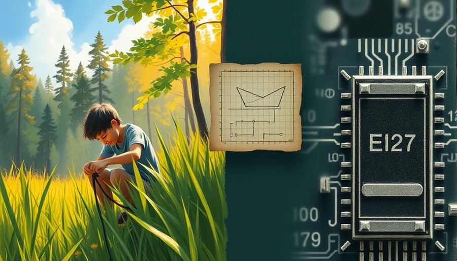
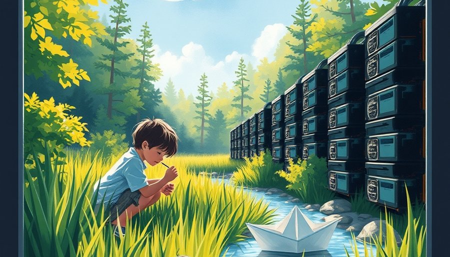

Ljubisa Bajic 这辈子都在做一件事：把不同的计算单元焊在一起。
在 AMD，他待了二十年。那会儿他的工作是设计 APU，把 CPU 和 GPU 塞进同一块硅片，让它们共享内存，别再搬来搬去。后来他去 NVIDIA 做高级架构师，2016 年自己出来创办 Tenstorrent，做的还是融合——一块通用可编程的 AI 芯片，基于 RISC-V 开放指令集，什么模型都能跑。
这条路走到 2022 年 10 月拐了个弯。芯片界传奇 Jim Keller 接任了 Tenstorrent 的 CEO。Keller 是通用路线的坚定信徒，曾在苹果、特斯拉、英特尔设计过一系列明星芯片。他接手后，Tenstorrent 继续向可编程加速器加 RISC-V 生态的方向走。Bajic 没留。2023 年年中，他带着老搭档 Drago Ignjatovic 和 Lejla Bajic 离开，在多伦多创立了一家新公司。
新公司的名字叫 Taalas。口号只有一句：模型就是计算机。
这句话翻译过来，意思很决绝。芯片不再是什么活都干的通用平台，芯片本身就是那个模型。权重不是装在内存里等着被搬运的数据，而是直接刻进硅片的物理电路。从可编程，一步跳到完全不可编程。
这等于把他前二十年做的事翻了个面。以前是让不同计算单元融合得更紧密，现在是干脆取消计算和存储之间的那道墙。以前是追求一块芯片跑所有模型，现在是让一块芯片只为一个模型而生。
行业里多数人觉得他疯了。通用芯片的信仰已经统治了七十年，灵活性是整个软件产业的基石。但 Bajic 算的是另一笔账。
拿 Llama 3.1 8B 来说。这个开源模型有八十亿个参数。每次生成一个 token，这八十亿个权重都要从显存搬进算力单元，过一遍乘加运算。生成一千个 token，就是八十亿乘以一千次搬运。在数据中心，乘以几百万用户，这笔搬运费以兆瓦为单位计费。换句话说，通用芯片的灵活只属于芯片本身，不属于用户。用户每次调用模型，都在为这份灵活付一笔隐性电费。
他赌的是，当这笔账单大到一定程度，专门为它造一座工厂反而更便宜。

Bajic 自己在一个亲笔文章里提到了 ENIAC。
上世纪四十年代，世界上第一台通用电子计算机 ENIAC 改一次程序，要靠工程师重新插拔电缆、拨动开关。换一个算法，工期以天计。那时候，程序是硬连线，锁死在机器里。
1945 年前后，冯·诺依曼提出了一套新架构：程序不再是一堆物理连线，而是变成一串数字，存进内存，和普通数据放在一起。同一个硬件，加载不同的程序，就能干不同的活。这个想法后来被叫做“存储程序”，它把计算从重布线的牢笼里解放了出来。
从那以后，整个产业沿着这条路狂奔了七十年。操作系统、编译器、应用软件，一层一层堆起来，全赖于一个前提：硬件是活的，程序是软的。通用芯片成了最便宜的选项，因为一套设计可以服务一万种场景。
直到大模型出现。
大模型和传统程序有一个根本区别：它的核心不是逻辑，是权重。一个 Llama 3.1 8B 的权重文件，一旦训练好，全世界几十亿人用的都是同一组数字。每次推理，芯片要做的不是执行一段可变代码，而是把同一批权重从显存搬进算力单元，做一遍乘加运算，再搬下一批。搬运本身成了能耗的大头。
冯·诺依曼架构有一个著名的瓶颈叫内存墙。数据在存储器和处理器之间来回跑，跑的能耗远大于计算的能耗。大模型把这个墙又砌高了几十层。一块 GPU 跑推理，大半的功耗不是花在计算上，是花在搬数据上。
Taalas 的做法是把时钟往回拨。他们不用 HBM 高带宽内存，不搞先进封装，不靠液冷散热。权重在芯片制造阶段就直接用掩膜只读存储固化进去。按技术报道的说法，单个存储单元直接参与乘加运算，计算和存储物理上不再分离。芯片流片之后，它就是那个模型。
表面看，这是倒退回 ENIAC 时代的硬连线。但 Bajic 的逻辑是：当年锁住是因为别无选择，如今锁住是主动选择。当一个负载大到几十亿人每天调用几十亿次，为它专门造一种硬件，比用通用平台每次付搬运费更划算。
按 Taalas 的说法，换一个模型也不需要重新设计整颗芯片。有报道称，只需改动两层金属掩膜，从收到新模型到硬件实现大约两个月。两个月，恰好卡在模型迭代周期的边缘。不快，但也许够用。
2024 年 3 月，Taalas 走出隐身，宣布拿到了约 5000 万美元的首轮融资。团队只有 24 个人，大部分是跟着 Bajic 做了十几年的老班底。
他们先立论，再出产品。对外讲的口径很简单：我们可以把任意一个模型编译成定制芯片，从代码到流片大约两个月。行业将信将疑。历史上，专用芯片的流片周期以年为单位，两个月听起来像天方夜谭。
2026 年 2 月，第一颗芯片 HC1 公开，赌局亮出了实物。同时，公司宣布了约 1.69 亿美元的新一轮融资，累计融资约 2.19 亿美元。
这颗芯片只有一个功能：运行 Meta 开源的 Llama 3.1 8B 模型。台积电 6nm 工艺，商业报道称面积约 815 平方毫米，塞了约 530 亿个晶体管。按公司自测基准，单用户吞吐量约 17,000 tokens 每秒，功耗大约 250 瓦。
什么概念？一个人对着它打字，它一秒钟能吐出上万字的回答，而耗电只相当于一台高端游戏显卡。公司宣称，比当时最快的商用方案快近一个数量级，造价低约二十倍，功耗低约十倍。
HC1 的设计哲学从根上就和 GPU 不同。GPU 靠 HBM 堆带宽，靠液冷压温度，靠先进封装挤密度。HC1 把这些全扔了。更扎眼的是它没有的东西。没有 HBM 高带宽内存。没有 3D 堆叠。没有先进封装。没有液冷散热。甚至不需要高速 IO。按官方说法，存储和计算已经合为一体，密度接近 DRAM 的水平。一颗芯片，插上电，就是个能聊天的完整模型。
代价当然也摆在那里。这一代芯片只为一个模型而生。Meta 升级 Llama 4 了？对不起，得重新流片。模型架构变了？改不了。它唯一保留的灵活性，是上下文窗口可配置，以及支持 LoRA 低秩微调，相当于给固化好的模型打几个小补丁。
对于模型迭代按月计的世界，这是最大的赌点。Taalas 的回应就是那个两个月和两层金属层。但机制没有公开验证，所有性能数字也都是公司自测，尚无第三方独立基准。对比对象的选取、测法口径，不同信源之间出入不小。
不过有一件事是真的：24 个人，按官方说法累计烧了约三千万美元，就做出了首颗芯片。这笔钱只占融资总额的一小部分。这个效率放在芯片行业，比它的性能数字更反常识。

2026 年 8 月 6 日，AMD 宣布达成最终收购协议。Taalas 并入 AMD AI 事业群，团队加入，计划与 Instinct GPU 和 Helios 机架级方案整合。收购金额没有披露。这是 AMD 在九个月内的第三起 AI 相关收购。
据 AMD 新闻稿，AI 事业群高级副总裁 Vamsi Boppana 说，Taalas 的技术可以补全 AMD 的推理产品线。Bajic 自己的说法是：“从零重建 AI 推理，围绕模型造硬件。”
从离开 Tenstorrent 到被 AMD 收编，三年时间，Bajic 的赌局走完了一个循环：出走、立论、流片、验证、进入巨头体系。他当年在 Tenstorrent 没走的那条通用路，Jim Keller 还在走；他自己押的专用路，最终被 AMD 放进了同一个货架。
以后的 Helios 机架里，既有通用的 Instinct GPU，跑各种模型，灵活调度；也有固化模型的专用芯片，专门伺候那几个调用量最大的基础模型，省电、省面积、省带宽。对 AMD 来说，这意味着它可以在同一个机架里，用 GPU 应付长尾需求，用专用芯片吃掉那几个头部模型的巨量调用。两种芯片，一种电费。通用和专用不再是路线之争，变成了产品组合问题。这场持续了七十年的路线之争，在 Helios 机架里暂时停火。就像工具箱里既有瑞士军刀，也有专开一种瓶盖的起子。
这个收场没有宣告谁赢谁输。它只是把一个激进赌局变成了一种可选项。
回看开头那个搬字。如果 Bajic 赌对了，专用芯片真的能把推理成本压下去一个数量级，那受影响的远不止数据中心电费账单。那些因为太贵而没有跑起来的 AI 应用，比如实时视频理解、永远在线的个人助理、工厂里每一颗螺丝的视觉质检，会从哪里长出来？
这个问题，芯片本身回答不了。但 HC1 至少证明了，不搬，是可行的。
余波
HC1 的第三方独立测试仍在进行，AMD 的整合刚刚开始。这场赌局的最终账单，要等数据中心实际跑起来才能算清。
小汪老师的成长观察笔记